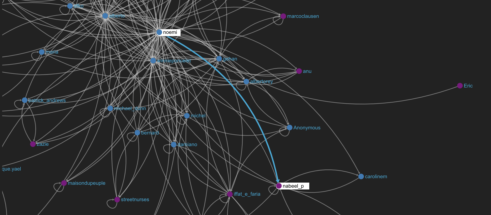

SenseStack increases the probability of generating innovative ideas, makes success more likely through skill sharing, improves connectivity between clusters of communities, improves documentation through methods and paves the way for powerful remote collaboration.

Open Ethnographer
Open Ethnographer is used for “coding” or tagging the content of online conversations, with awareness of how each tag fits into the social network of interactions. It allows digital ethnography at an unprecedented scale, to understand a community from the point of view of the community itself.
Edgesense
EdgeSense is a dashboard that allows you to understand how your community interacts. See how your community grows and clusers over time and how people are connected. See how dense or sparse the networks are between subcommunities and understand when to take action.
GraphRyder
Graphryder allow you to analyze conversations through reading of ethnographic data in network graphs. We call these networks semantic social networks, as they incorporate information on social interaction and their meaning. Graphryder is based on innovative academic research by Edgeryders network scientists.
Sense Stack is an innovative suite of online software developed, customized and maintained by Edgeryders. SenseStack is integrated with complete access to the Edgeryders Academy, with online courses about digital ethnography with Open Ethnographer, semantic social network analysis with Graphryder (available Sept ‘18) and Community Building and Management.
Open Ethnographer
Open Ethnographer is an open source tool for Qualitative Data Analysis (QDA), which is a way to systematize and understand online conversations.
Open Ethnographer is used for “coding” or tagging the content of online conversations, with awareness of how each tag fits into the social network of interactions. It is a simple to use and intuitive tool that is key to other and more rich visualizations (ie through the use of Graphryder).
Ethnography has always been a solitary science, Open Ethnographer is a new and scalable system that allows digital ethnography possible at an unprecedented scale, and because the goal of ethnography is to understand communities make meaning and create culture, from the point of view of the community itself, Open Ethnographer is a powerful way to harness collective intelligence at work. It’s developed for and by ethnographers, but can easily be taught to any community manager to keep track of an online conversation at depth.
EdgeSense
EdgeSense is a dashboard that allows you to understand how your community interacts. You'll see a graphical representation of the community where nodes represents users and edges represent interactions. See how your community grows and clusers over time and how people are connected. See how dense or sparse the networks are between subcommunities and understand when to take action. EdgeSense helps you make decisions on how to best manage your community. For example is it possible to highlight or hide the role of moderators, to understand to which degree the community is self-sustainable or might need a push from the center.
Another possible analysis is based on the subcommunities that are active in and how dense the networks are between subcommunities.
Analysis of nodes help you understand how much your community members are active and engaged in the conversation, which is key to understand different roles or project groups that could emerge during a period of activity.
Graphryder
Graphryder is a dashboard tool that allow us to analyze the conversations that are happening in the community through reading of ethnographic data. Graphryder is based on innovative academic research which has led to publication in scientific journals. A dashboard represents conversations, and the fieldnotes made by researchers thereon, in network form. We call these networks semantic social networks, as they incorporate information on social interaction and their meaning. They encode a map of the associations between key concepts as perceived by informants as a group.
Graphryder is a very useful tool for insight into your community because it maps out a graph of the view of the community about sets of topics, and it can lead to unexpected solutions or original point of views. Graphryder is what helps you navigate conversations at scale and gain insights.
Edgeryders Dreams
Dreams is the Edgeryders version of the open source tool Dreams for co-creating projects in an easy and transparent manner with the rest of a community. It’s also the tool that will keep track of budgeting and fund applications. Dreams has been used by participatory communities since 2015, and the Edgeryders version DreamSense is under development.